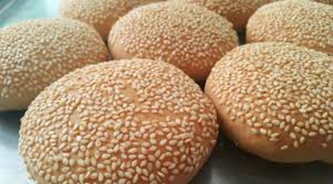
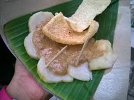
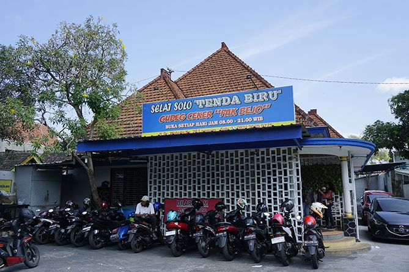
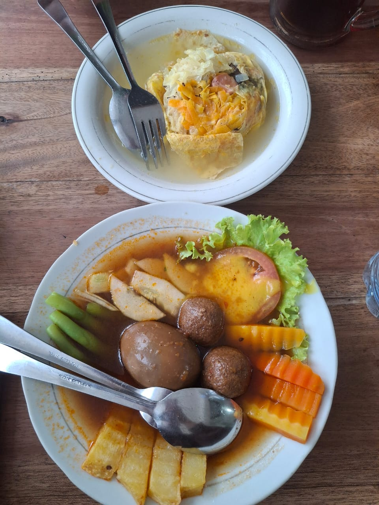

Kuliner
Burger Jawa: Kompyang

Roti khas Solo yang bernama “Kompyang” mungkin terdengar asing untuk sebagian orang, namun roti ini banyak digemari oleh Warga Solo asli terutama para lansia. Menurut sejarah roti ini sudah ada sejak tahun 1563 dan merupakan warisan kuliner China. Roti ini dibuat sejak zaman penjajahan dan dibuat sebagai bekal untuk perang dan teksturnya sengaja dibuat keras agar bisa awet selama menjalani perang.
Kompyang merupakan roti polos yang memiliki tekstur keras, kering, dan gurih. Disebut dengan Burger Jawa karena roti ini dibuat dengan tepung terigu, garam, serta ragi yang diuleni dan dibentuk bulat. Khas unik dari kompyang ini karena adonan yang dibuat tidak dibubuhi mentega dan gula, dan biasanya Warga Solo mengkonsumsi roti ini bersama kopi dan teh. Cita rasa kompyang ini cenderung sederhana karena rasanya hanya gurih saja dan sangat cocok sebagai menu sarapan.
Kompyang dibuat dengan 4 tahap yaitu nguleni (membuat adonan), ngetheng (memipihkan adonan), mijeni (menaburkan biji wijen diatasnya) dan mengoven. Roti ini dimasak menggunakan tungku tanam yang sudah dipanaskan memakai kayu bakar berbentuk lingkaran 4 meter dan kedalaman 1,5 meter. Salah satu produsen kompyang di Solo bernama Haryono mengatakan bahwa semua proses ini dilakukan mulai pukul 23.30 – 04.00. Proses ini dilakukan pada jam tersebut karena roti kompyang ini tergolong salah satu makanan yang disantap pada pagi hari sehingga kenikmatannya akan berkurang jika roti ini diprosuksi pada siang hari.
Cara orang menyantap roti ini pun sangat unik selain dicelup dengan kopi dan teh yakni dibuat seperti burger. Caranya adalah dengan membelah roti kompyang menjadi 2 dan diisi dengan pia-pia (sejenis bakwan khas lokal). Maka dari itu kompyang disebut dengan roti burger ala Jawa dengan ciri khas yang cocok dilidah Indonesia.
Ditulis oleh : Shelly Yuliyanti
Sumber: https://www.tempo.co/gaya-hidup mencicip-kompyang-burger-ala-solo-yang-sederhana-namun-nikmat-227805, https://solo.tribunnews.com/2025/06/11 sejarah-kompyang-roti-legendaris-langka-yang-masih-eksis-di-solo-warisan-kuliner-china-sejak-1563, https://www.soclyfe.com/baca/kompyang-kuliner-tradisional-khas-kota-solo-burger-ala-jawa
Cita Rasa: Cabuk Rambak Khas Solo

Cabuk rambak merupakan makanan khas Solo yang masih eksis sampai sekarang. Kuliner legendaris ini dinamakan dengan cabuk rambak karena disajikan dengan daun pisang yang dipincuk sebagai pembungkusnya. Sayangnya makanan ini sangat sudah sangat langka dan hanya ditemukan di sekitar Pasar Gede, Jalan Ledoksari Selatan, dan belakang kompleks Stadion Manahan. Makanan ini memiliki daya tarik sendiri karena penyajiannya yang sederhana hanya terdiri dari ketupat atau lontong yang disiram dengan saus biji wijen ditambah dengan kerupuk rambak (kerupuk kulit).
Nama cabuk rambak terdiri dari 2 kata utama. Cabuk merujuk pada ampas atau sisa dari proses pembuatan minyak wijen yang digunakan untuk sausnya, sedangkan rambak adalah sebutan untuk kerupuk kulit sapi yang digunakan sebagai pelengkap. Kombinasi ini lah yang membuat makanan ini unik dengan rasa yang khas.
Bukan sekedar kuliner, cabuk rambak merupakan bagian dari warisan budaya yang diwariskan secara turun-temurun. Makanan ini biasanya dihidangkan dalam acara adat dan hari-hari penting dan merupakan simbol kebersamaan juga tradisi. Walaupun sejarah cabuk rambak tidak dijelaskan secara rinci, masyarakat Solo menyakini bahwa makanan ini sudah ada sejak zaman dahulu dan merupakan warisan kuliner masyarakat setempat.
Saat ini cabuk rambak udah ada variasi yakni beberapa penjual yang menambahkan taburan bawang goreng atau sedikit irisan cabai untuk menambah sensai pedas. Namun cita rasa khas dari cabuk rambak yaitu menggunakan saus wijen sebagai elemen utama. Cabuk rambak memiliki rasa asin dan gurih dengan kerupuk rambak yang memiliki tekstur renyah dan kontras ditambah ketupat yang lembut menjadikan sajian yang menggugah selera.
Agar tidak punah, beberapa restoran atau cafe yang ada di Solo mulai mengadaptasi Cabuk rambak menjadi lebih modern dengan panyajiannya yang lebih menarik dan ditambah tempe goreng atau telur puyuh. Para penggiat kuliner mencoba menyajikan cabuk rambak dengan versi yang lebih praktis dengan kemasan siap saji sehingga bisa dikonsumsi oleh masyarakat diluar Jawa Tengah. Selain agar tidak punah, upaya ini dilakukan agar bisa memperkenalkan makanan khas ini ke lebih banyak orang dan memastikan cabuk rambak tetap menjadi bagian dari kekayaan kuliner Indonesia yang patut dibanggakan.
Dengan upaya pelestarian dan inovasi yang terus dilakukan diharapkan cabuk rambak bisa tetap dinikmati oleh generasi mendatang dan semakin dikenal di kancah kuliner nasional maupun internasional.
Ditulis oleh : Shelly Yuliyanti
Sumber: https://www.detik.com/jateng/kuliner/d-7081937/mengenal-cabuk-rambak-khas-solo-yang-berbalut-sambal-wijen-dan-resepnya, https://www.rri.co.id/kuliner/1011083/mengapa-cabuk-rambak-begitu-populer-di-solo, https://www.liputan6.com/regional/read/5962831/cabuk-rambak-kuliner-khas-jawa-tengah-yang-kaya-rasa-dan-tradisi?page=2
Sumber Gambar : https://ksmtour.com/wisata-kuliner/kuliner-solo cabuk-rambak-mencicipi-kuliner-solo-yang-gurih-dan-nikmat.html
Selat Solo Tenda Biru

Nikmati Lezatnya Selat Solo Otentik di Warung Tenda Biru, Surganya Kuliner Tradisional. Warung Makan Selat Solo Tenda Biru kembali menjadi primadona bagi para pecinta kuliner tradisional di kota ini. Dengan suasana sederhana namun nyaman, warung ini menawarkan cita rasa Selat Solo yang autentik dan menggugah selera, menjadikannya tempat favorit untuk menikmati hidangan khas Solo yang legendaris.
Selat Solo sendiri adalah hidangan khas dari Solo yang menggabungkan berbagai bahan seperti sayuran segar, daging sapi rebus, telur rebus, kentang goreng, dan kuah manis yang kaya rempah. Di Warung Tenda Biru, resep turun-temurun ini dijaga dengan penuh perhatian sehingga setiap piring yang disajikan mampu menghadirkan kenikmatan yang tak terlupakan bagi para pengunjung.
Pemilik warung, Bapak Joko, menceritakan bahwa kunci utama kelezatan Selat Solo di Tenda Biru terletak pada pemilihan bahan-bahan berkualitas dan proses memasak yang telaten. “Kami selalu menggunakan daging sapi pilihan dan bumbu racikan keluarga yang sudah diwariskan sejak puluhan tahun lalu. Setiap bahan diproses dengan hati-hati agar rasa aslinya tetap terjaga,” ujarnya dengan bangga.

Selain Selat Solo, Warung Tenda Biru juga menyediakan berbagai menu pendamping seperti sate ayam, sate telur puyuh, dan es dawet yang segar, menjadi pelengkap sempurna untuk santapan Anda. Harga yang ditawarkan pun sangat terjangkau, membuat warung ini ramai dikunjungi oleh berbagai kalangan, mulai dari pelajar, pekerja kantoran, hingga keluarga yang ingin menikmati hidangan tradisional bersama.
Warung Makan Selat Solo Tenda Biru berlokasi di Jalan Slamet Riyadi No. 123, Solo, tepatnya di pinggir jalan yang mudah dijangkau dan memiliki area parkir yang memadai. Warung ini buka setiap hari mulai pukul 09.00 pagi hingga pukul 21.00 malam, memberikan kesempatan bagi siapa saja untuk menikmati hidangan kapan pun.
Bagi Anda yang ingin merasakan cita rasa asli Selat Solo dalam suasana yang hangat dan bersahaja, Warung Makan Selat Solo Tenda Biru adalah destinasi kuliner yang wajib dikunjungi. Jangan lewatkan kesempatan untuk mencicipi kelezatan yang telah menjadi bagian dari tradisi kuliner Solo selama puluhan tahun ini.